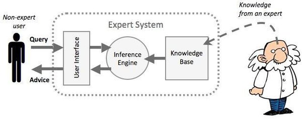

6 Week 6- Classification-1
6.1 SUMMARY
Classification can be used in many studies like Urban Expansion using Landsat data, Air pollution, Urban green Spaces, monitoring forest like illegal logging, and Forest fires. in all these studies land cover is extracted from the earth observation data.
So, the process of classification involves inductive learning which means that by looking at the map we know where is ground or barren land or urban or forest area and accordingly we can classify.
For classification we use an expert system.

(“What Is a Knowledge-Based System in the Context of Artificial Intelligence?” n.d.)
so the expert system consist of the knowledge base and inference engine. what we want to find out how a computer replicate human knowledge. and how expert system is applied to remote sensing.
Machine learning is defined as the science of computer modeling of learning process. there are number of machine learning data decision tree /regression tree.
CART (Classification and Regression Tree)
Classification tree classify data into two or more discrete categories. For example Land cover. Its a tree-like graph with nodes and leaves. Another example we can take is if we want to play badminton which depend on the conditions outside hot or cold, the speed of wind and the weather.
 |
(“Decision Tree Tutorials & Notes | Machine Learning,” n.d.)
Regression trees predict continuous dependent variable like numerical variable for example total population. They subset the data into smaller chunks. When we create decision tree the end leaves might be a mixture of categories meaning they are impure known as Gini impurity. The option with the lowest impurity goes to the top of the tree and becomes the root.
While discussing model prediction it is important to understand prediction errors(bias and variance). so it is very important to understand these errors which will help us build accurate models and avoid the mistake of over fitting and under fittingg. (Singh 2018)
So decision trees (DTs) are not good with new or big size data. Higher depth DTs are more prone to over fitting and thus leads to higher variance. This shortcoming of DTs is explored by random forest model.
Random Forests
Random Forests (RFs) are composed of multiple independent decision trees that are trained independently on a random subset of data.
In RFs we talk about bootstrapping and out of bag(OOB) error which is basically we do not train all the values and what is left is then tested and validated with the model. the left out variables are called OOB.
how do we apply these methods with the satellite imagery?
Image Classification Techniques - it is the process of assigning land cover classes to pixels. For example classes include water, urban, Forest, agriculture and grassland.
Supervised
Unsupervised
Object based Image Classification
Unsupervised classification usually referred as clustering/k-means. some common clustering algorithm are ISODATA.
Supervised Classification we use Maximum likelihood and support vector machines(SVM).
6.2 APPLICATION
“Identifying specific crop types, cropland, and cropping patterns using space-based observations is challenging because different crop types and cropping patterns have similarity spectral signatures. But combining satellite imagery with machine learning methods helps in monitoring the above concern. In this study, Sentinel-2 and Landsat-8 time series data were used with the Decision Tree Classifier (DTC) and Random Forest (RF) methods to map cropland and crop types in Gujranwala’s sub-districts. Optical remote sensing NDVI time series data facilitated cropland mapping, revealing wheat as the predominant crop with 85% coverage, while barley occupied only 0.07% of the total crop area. The analysis focused on areas with consistent agricultural calendars, parcel morphology, and climatic conditions. DTC and RF methods showcased wheat’s superior accuracy.”(Tariq et al. 2023)
“Remote sensing helps study Urban Green Spaces (UGSs), but less is known about non-tree species, change detection, and health assessment. Most research focuses on large UGSs, neglecting smaller areas like street trees and parks, which are still significant. Urban managers need to identify vegetation species to maintain and protect UGSs from invasive species. Previously, this was costly and hard, relying on field surveys. Now, remote sensing allows for accurate and timely identification of vegetation species in urban areas.”(Shahtahmassebi et al. 2021)
The key concerns in the above study is the presence of shadow in high spatial resolution imagery which can reduce the accuracy of UGSs mapping ((Zhang and Qiu 2012); (Merry et al. 2014)). There is also a need to develop methods for extracting informative and intelligent information from Google Street View, for example, species characteristics and the quality of UGSs as might be perceived by users of the spaces.
A new study suggests creating, testing, and implementing a machine learning approach to assess green space quality based on human perception, using transfer learning from pre-existing models. The findings show that the developed models performed well in six key areas: accuracy, precision, recall, F1-score, Cohen's Kappa, and Average ROC-AUC. (Rustamov, Rustamov, and Zaki 2023)
Using remote sensing data, particularly the Normalized Difference Vegetation Index (NDVI), is a common method to evaluate green space quantity on satellite images. (Sun et al. 2021) However, this approach has limitations when assessing green space quality. Remote sensing struggles to detect subtle changes in quality-related variables and provides only a two-dimensional view, which may not accurately represent the green space perceived at eye level. Additionally, while quantity matters, green space quality is more crucial for human health. The complexity of feature extraction in Convolutional Neural Networks (CNN) depends on the number of layers, with fewer layers resulting in weaker learning abilities for complex features.(Ayadi and Lachiri 2022)
6.3 REFLECTION
So, this week was about classification and had a lot of content to cover. I think this is the most important lecture because all the methods taught during the lecture are used very commonly for digital image processing and in future will be used mostly. I understood about decision trees and random forest and how machine learning plays an important role in the field of remote sensing. By week 6 all we did earlier is making sense and helpful in understanding about different applications where we can use this like detecting fires, flood risk, desertification and LULC heat maps.